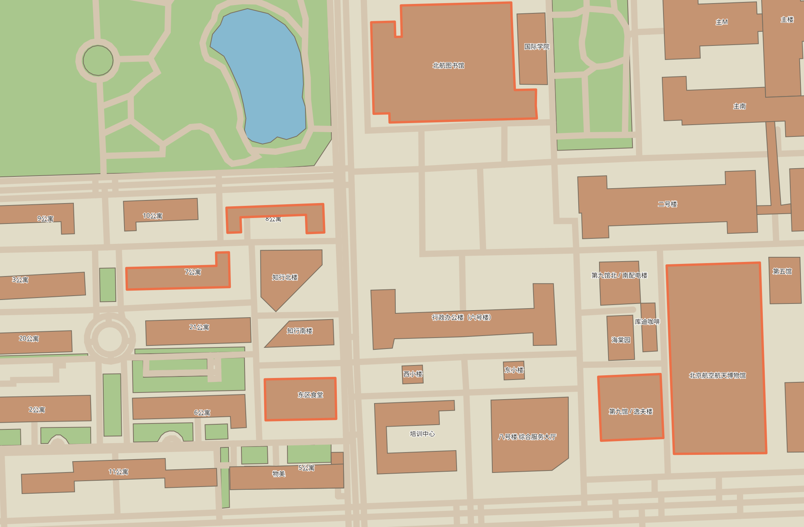

从仓库二维地图裁出公寓区—东区食堂—图书馆—博物馆一带；橙色轮廓标出选中的源数据要素。
▶ 开始校园漫步：移动、碰撞、地点切换与互动

道路、绿地、水体和建筑轮廓取自仓库二维数据。此页查看源地图；试玩页提供三个室外区块、轮廓碰撞与地点互动。室内设计暂缓。
[二维数据来源] RobertYoung446/buaa-simulator · © OpenStreetMap contributors · ODbL 1.0